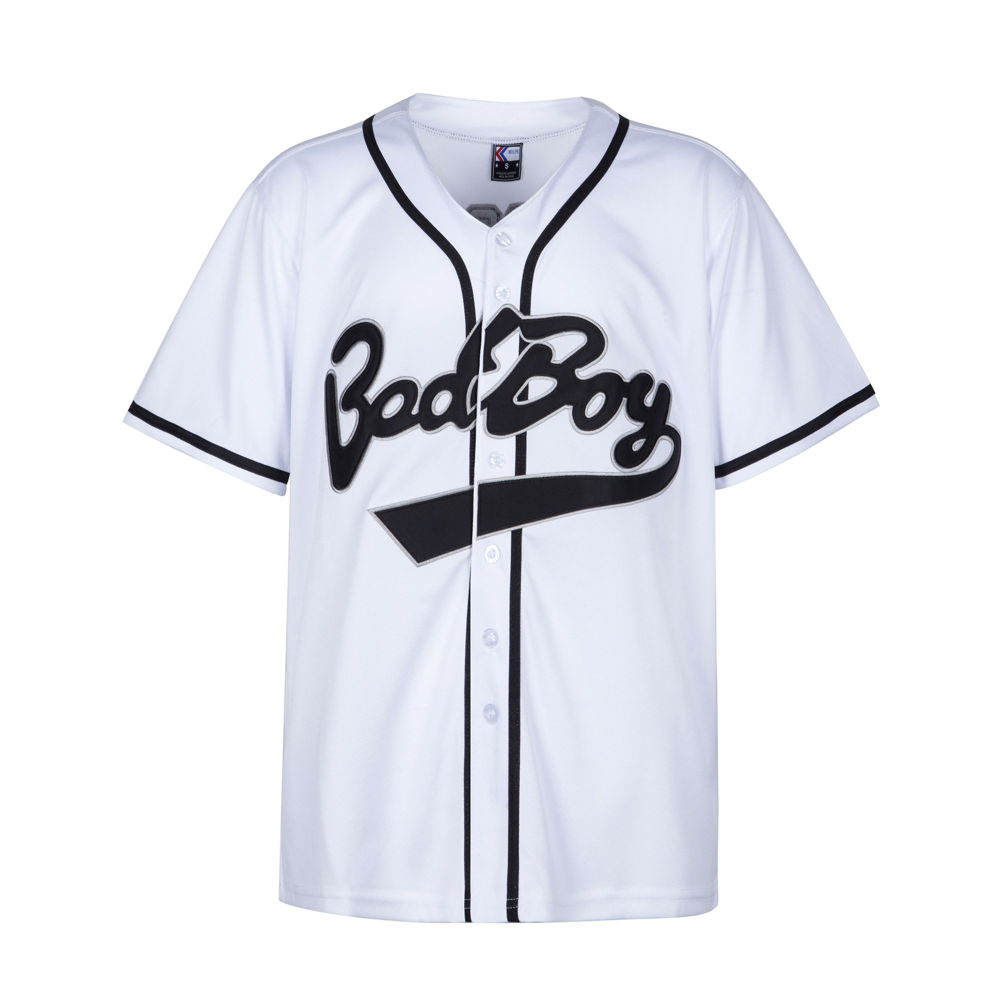
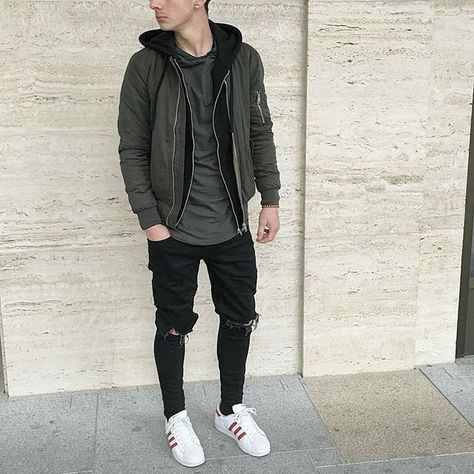

BAD BOYZ
WHO ARE WE ?
Bad Boyz is an American alternative sport and lifestyle brand. They are notable for their presence in both fashion and perfomance equipment.
Bad Boyz provides action sport and combat sport athletes with performance products and apparel. Marcus first began producting T-shitrts and shorts for local surfuers , skaters and motocross riders in San Diego, CA in the early eighties. In the nineties, Bad Boy launcgeed a combat sport line, starting with their sponsership of Rickson Gracie, son of the founder of Brazilian Jiu Jitsu, Helio Gracie, for a seminar that he was giving in Rio de Janeiro. The seminar made the cover story in a national magazine and the the cover photo featured Rickson wearing a Bad Boy gi. As Jiu Jitsu contiued to grow in braazilk, Bad Boy continued to sponsor both the Gracies and Jiu Jitsu tournaents.
The Bad Boy branding is currently represented in EU by Archive selling MMMA equipment and fight waear.
Bad Boy has won Best Technical Clothing in 2010 and 2011 World MMA Awards, and best Lifestyle Clothing Brand 2012.
what we offer ?
 